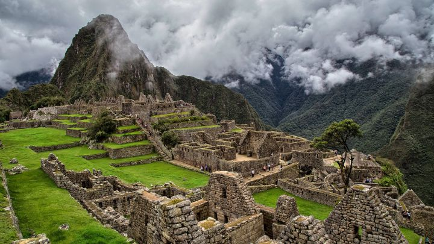
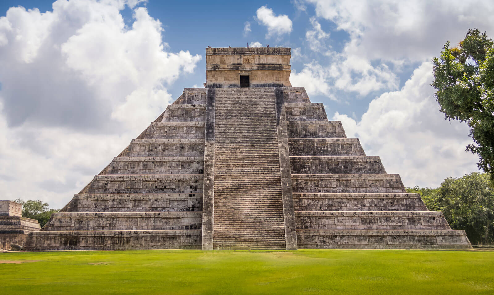
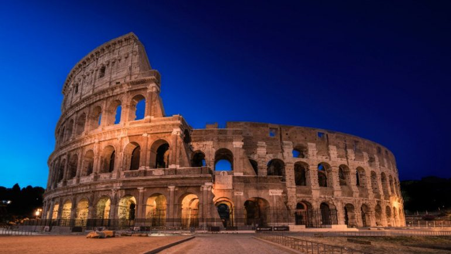
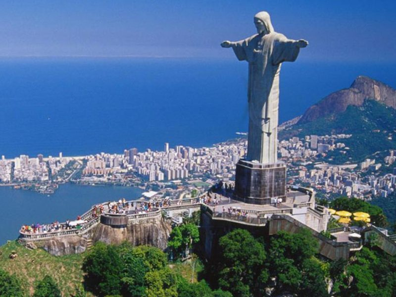
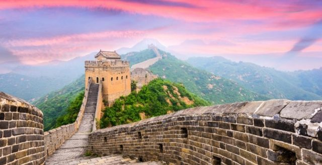
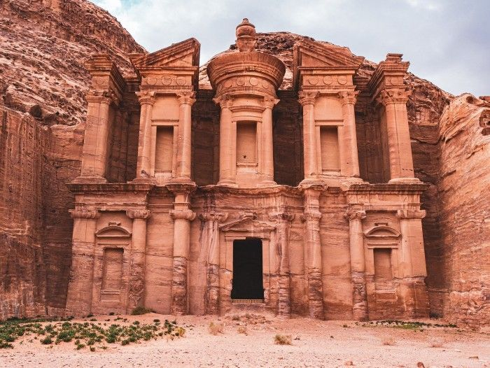
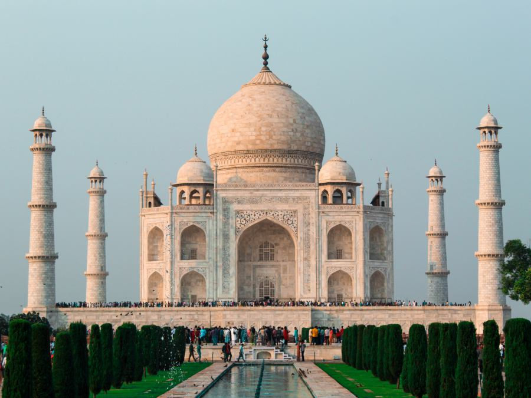

Ubicado a 2.430 metros de altura en un paraje de gran belleza, en medio de un bosque tropical de montaña, el santuario de Machu Picchu fue probablemente la realización arquitectónica más asombrosa del Imperio Inca en su apogeo. Sus murallas, terrazas y rampas gigantescas dan la impresión de haber sido esculpidas en las escarpaduras de la roca, como si formaran parte de ésta. El marco natural, situado en la vertiente oriental de los Andes, forma parte de la cuenca superior del Amazonas, que posee una flora y fauna muy variadas.

La ciudad de Chichén Itzá es, sin duda, la ciudad maya más famosa del mundo. Está ubicada en el estado de Yucatán, a 128 km de Mérida en dirección a Cancún, y recibe más de un millón de turistas cada año, lo que la convierte en la segunda zona arqueológica más visitada de México, después de Teotihuacan
Fue fundada por grupos mayas entre los años 325 y 550 de nuestra era. Alrededor del año 800, los toltecas invadieron la zona, provocando la fusión de las dos culturas. Así, la ciudad alcanzó su máximo esplendor y llegó a ser la más poderosa de la Península de Yucatán a principios del siglo XII.

Construido durante el reinado de los emperadores Flavios, entre los años 70 y 72 d.C., el Coliseo es una de las 7 maravillas del mundo moderno. Situado en Roma, Italia, el colosal anfiteatro tiene 4 pisos de altura y 80 puertas de acceso. Durante el apogeo del Imperio Romano, el Coliseo acogió a más de 50 000 espectadores para presenciar los juegos de gladiadores, cacerías de animales, ejecuciones públicas, recreaciones de famosas batallas y muchos otros espectáculos públicos. En la actualidad, el Coliseo es el destino más popular de Roma, ya que recibe millones de visitantes al año.

En Río de Janeiro, ciudad emblemática del Brasil, se encuentra la estatua del Cristo Redentor, conocida también como Cristo del Corcovado. Su importante valor simbólico ha promovido las peregrinaciones de los católicos más devotos, pero también ha atraído la visita de los turistas deseosos de develar los misterios de una de las siete maravillas del mundo moderno.

La Gran Muralla China es una fortificación construida entre los siglos V a.C. y XVII d.C. en el norte de China, a fin de contener las invasiones de tribus nómadas provenientes principalmente de Mongolia. Se trata de la mayor obra de ingeniería desarrollada en la historia. La UNESCO nombró a la Gran Muralla como Patrimonio de la Humanidad en el año 1987.

Petra es una antigua ciudad del Oriente Próximo excavada en la roca. Llamada también «la ciudad rosa» por el color único de su faja montañosa, Petra constituye un rico conjunto arqueológico del tiempo de los nabateos, que combina elementos orientales y occidentales. Templos, tumbas, túneles, presas y canales se combinan con un paisaje único de arenisca roja. Por todo ello, es Patrimonio de la Humanidad por la UNESCO desde 1985

Taj Mahal quiere decir "corona de los palacios" y es una de las siete maravillas del mundo. Fue construido entre 1631 y 1653 en Agra, la India. Se trata de un mausoleo dedicado a la esposa favorita del emperador Shah Jahan, llamada Arjumand Banu Begum, conocida como Mumtaz Mahal.